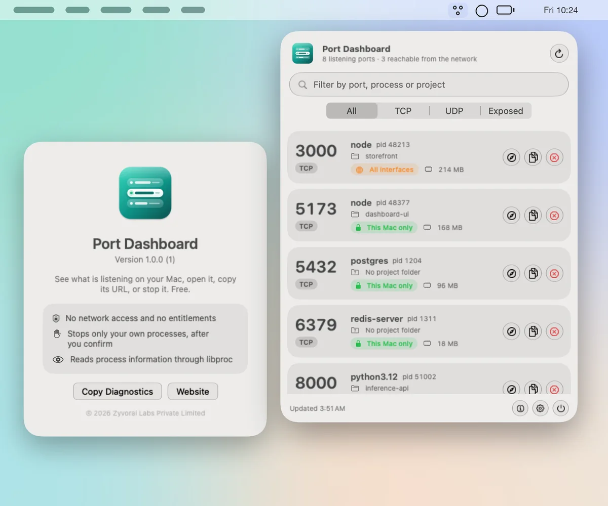
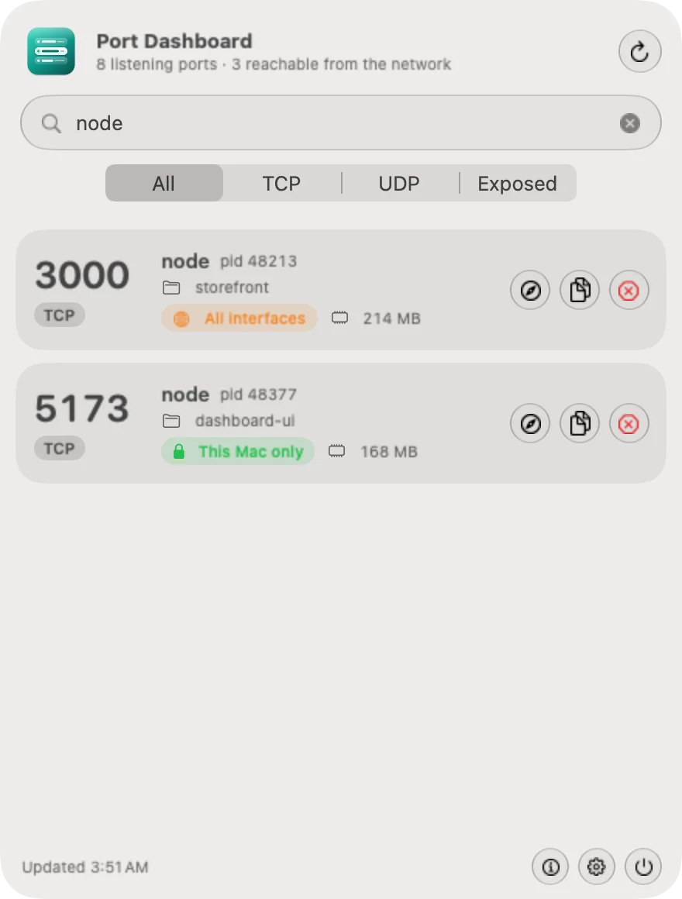
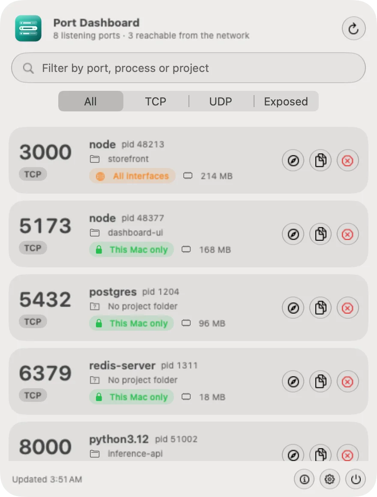
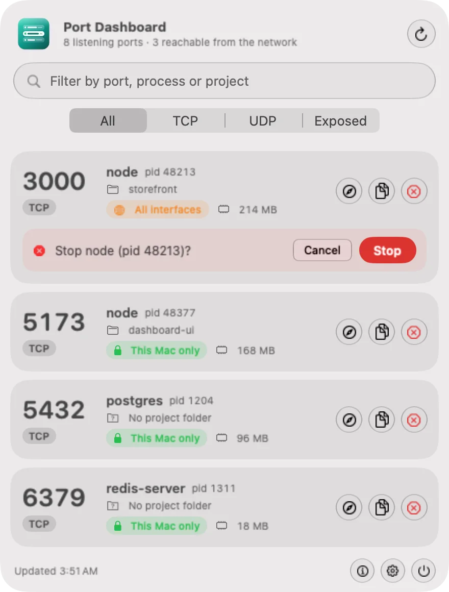
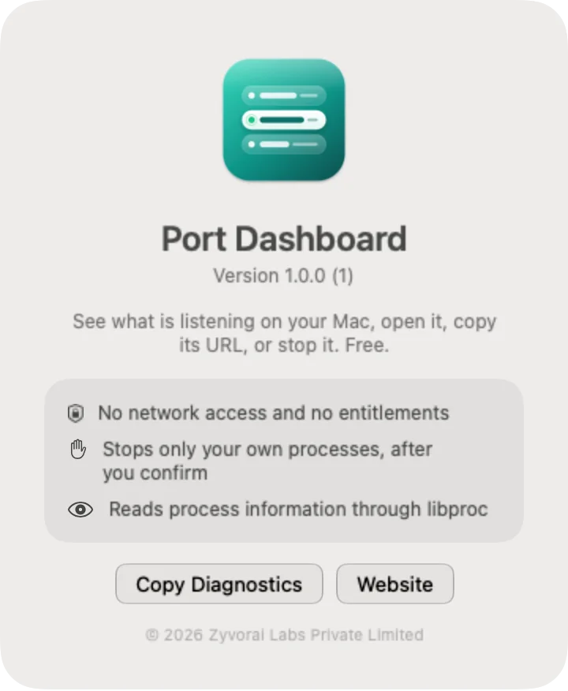

Zyvor · for Mac
Port Dashboard
What is listening on your Mac.
Which process owns port 3000, and how do I stop it? A free menu-bar app that lists every listening TCP and UDP port with its process, project folder and memory. Open it, copy its URL, or stop it. Nothing leaves your Mac.
PortDashboard-1.0.0.dmg · Free, no licence key · All downloads
Verified by Apple: Developer ID signed and notarized. This applies to the 1.0.0 DMG.
- Requires macOS 27 or later on Apple silicon. No licence key, no trial and no account.

Find what is listening on your Mac.
See what is on port 3000
Filter by port, process or project. Each row shows the process, the git project folder it runs from, its memory and who can reach it.
This Mac only, or the whole network?
Each port is badged This Mac only, All interfaces or One interface. The Exposed filter shows only what other devices can reach.
Stop it, with a safety net
Stop asks first, then sends SIGTERM. Force Kill needs a second prompt. Only your own processes can be stopped.
Port 3000 is taken. By what?
Every listening port, the process that owns it, the project folder it runs from and its memory, one click from the menu bar.
Features
Find it
What is on port 3000?
Filter by port, process or project. Each row shows the process and pid, the git project folder it runs from, its memory and who can reach it. The list refreshes every three seconds.

Reach
This Mac only, or the whole network?
Each port is badged by its bind address: This Mac only, All interfaces or One interface. The Exposed filter shows only what other devices can reach.

Stop it
Stop it, with a net under you.
Stop asks first, then sends SIGTERM. If the process is still running you get a second prompt before Force Kill (SIGKILL). Only your own processes can be stopped, never pid 1, never Port Dashboard itself.

Private
Nothing leaves your Mac.
No network access, no account, no analytics and no entitlements. It reads process information through libproc and changes nothing except the processes you choose to stop.

Small things, done properly.
Open and copy
Open a TCP port in your browser or copy its URL. Port 443 and 8443 use https; a specific bind uses its own address.
Keyboard first
Command-R refreshes, Command-F focuses the filter, Command-I opens About, Escape clears the filter, Command-Q quits.
Light, dark, accessible
Liquid Glass on macOS 27, light and dark, VoiceOver labels, and Reduce Motion and Reduce Transparency are respected.
Launch at login
One toggle in Settings. It lives in the menu bar and has no Dock icon.
Safe to leave running.
No network, no entitlements
The app contains no network code and is signed with no entitlements.
Read-only until you say stop
It reads process information through libproc. The only thing it ever changes is a process you chose to stop.
Guarded stop
Own-user processes only. Never pid 0 or 1, never itself, never as root. The process is re-checked by start time so a reused pid is never signalled.
Specs and requirements.
- Requires
- macOS 27 or laterApple silicon.
- Price
- FreeNo licence key. Terms in the LICENSE file.
- Build
- Signed and notarizedDeveloper ID signed and notarized by Apple, so it opens without a Gatekeeper prompt.
- Version
- 1.0.0
- Network
- NoneNo network code. No entitlements.
- Lists
- TCP listeners and UDP bindsProcess, pid, project folder, memory and scope.
Honest limits
Without administrator rights the system only shows this account's sockets, so services run by other users are not listed. It cannot stop another user's process, and it refuses to stop system processes. It was tested by its automated self-tests and a launch check; it has not been clicked through by a human on a clean Mac yet.
Get started in three steps.
Download
Get
PortDashboard-1.0.0.dmgfrom the release page. Its SHA-256 is below and inPortDashboard-1.0.0.dmg.sha256.Install
Open the DMG and drag Port Dashboard to Applications. It requires macOS 27 or later.
Open it
Launch it from Applications. It appears in the menu bar; click the icon to see your ports.
Port Dashboard 1.0.0 for Mac · SHA-256
c0f16033dbd21da1124898b22742a0ff22fa6b5503cce643cb0ab28d8a687bb6Verify: echo "c0f16033dbd21da1124898b22742a0ff22fa6b5503cce643cb0ab28d8a687bb6 PortDashboard-1.0.0.dmg" | shasum -a 256 -c
Questions, answered.
Is it really free?
Yes. There is no licence key, no trial and no account.
Does it use the network?
No. It contains no network code, is signed with no entitlements, and reads process information through libproc. Opening a port in your browser hands the URL to your browser.
How does Stop work?
You confirm, it sends SIGTERM and waits a moment. If the process is still running it asks again before Force Kill (SIGKILL). The pid is re-checked by start time first, so a reused pid is never signalled.
What can it not stop?
Processes owned by other users, system processes (pid 0 and 1), Port Dashboard itself, and anything when it runs as root.
Why do I not see every service on my Mac?
Without administrator rights the system exposes only this account's sockets. Services run by other users are not listed.
Will macOS warn me when I open it?
No. The download is Developer ID signed and notarized by Apple, so it opens without a Gatekeeper prompt. The SHA-256 is on the release page if you want to verify it.
Which macOS versions?
macOS 27 or later, on Apple silicon.
Are the screenshots real?
They are rendered from the app's own views with invented sample rows, not captured from a running session. Every caption says Sample data.
Can I redistribute it?
No. It is proprietary software. See the LICENSE file.